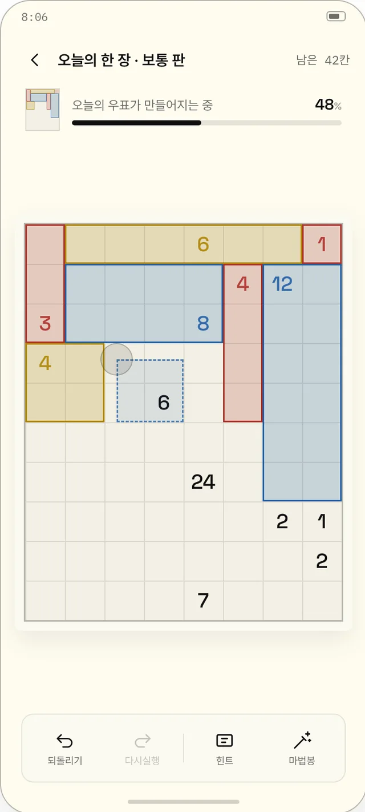
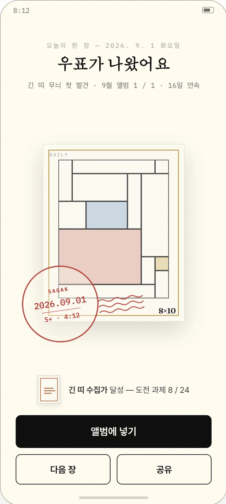
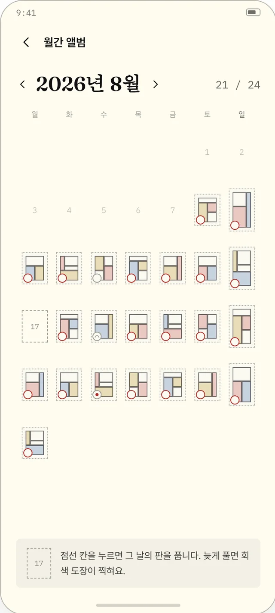
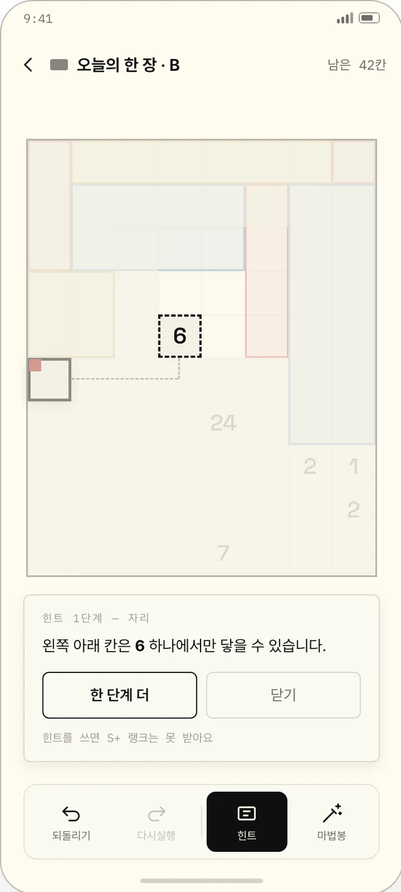
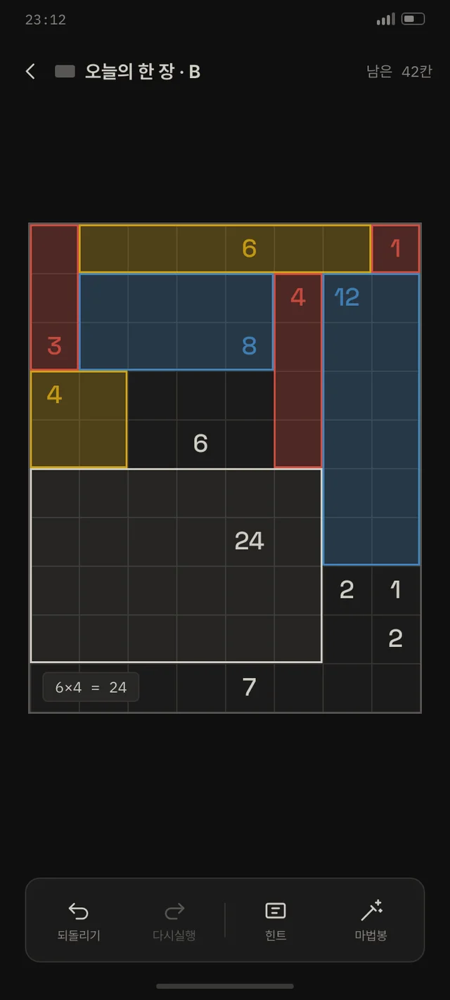
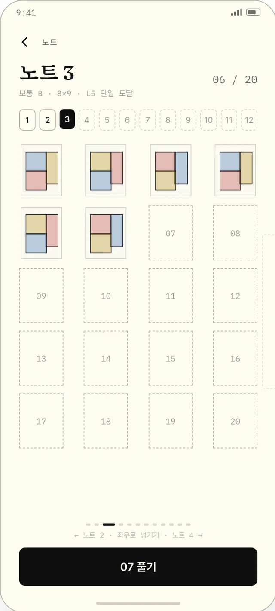

종이 위에 연필로,
사각형을 긋습니다.
연필이 종이를 긋는 소리로 시작합니다. 사각형을 그리고, 풀어낸 만큼 우표가 쌓입니다. 모든 퍼즐은 답이 하나뿐이고, 찍을 필요가 없습니다.
출시 후 다운로드 링크가 활성화됩니다.규칙은 세 줄이면 끝납니다
숫자가 적힌 칸을 포함해, 그 숫자만큼의 칸을 가진 사각형으로 나눕니다.
모든 칸은 어느 한 사각형에 속하고, 사각형 안의 숫자는 하나뿐입니다.
모든 판은 유일한 답을 가집니다. 찍을 필요가 없습니다.
손맛 · 종이 · 우표첩
드래그하는 사각형이 손가락을 그대로 따라옵니다. 칸수가 맞아 갈수록 잉크가 진해지고, 정확히 맞는 순간 손끝에 짧은 촉감이 옵니다.
화면의 모든 것은 종이 · 연필 · 잉크 · 도장으로 만들 수 있는 것뿐입니다. 반짝이는 연출도, 폭죽도 없습니다.
완성한 분할이 그대로 우표로 인쇄됩니다. 마지막에 푼 사각형부터 색이 들어가서, 같은 문제라도 사람마다 얼굴이 다릅니다.
화면으로 먼저 보세요

사각형을 긋습니다
모서리에서 손가락을 떼면 사각형이 확정됩니다. 잘못 그은 사각형은 한 번 눌러 지웁니다.

완성은 도장 한 번
보드가 줄어들며 우표가 되고, 종이와 도장이 얹힙니다. 축하는 그것으로 끝입니다.

달력이 채워집니다
하루 한 장, 모두에게 같은 퍼즐. 놓친 날은 나중에 풀어도 그 날짜에 꽂힙니다.

힌트는 답을 주지 않습니다
다음 논리 한 단계를 문장으로 알려 줍니다. 11단계 기법을 순서대로 배웁니다.

밤에는 어두운 종이
검은 화면이 아니라 어두운 종이입니다. 결은 그대로 남고 잉크만 밝아집니다.

노트 12권, 한 권에 20장
오래된 인쇄소에 견습으로 들어와 견본 노트를 채웁니다. 한 장을 풀면 다음 장이 열립니다.
해답이 그대로 우표가 됩니다
시카쿠의 답은 사각형의 분할입니다. 그 분할을 2–3도 잉크로 인쇄하면 우표 한 장이 됩니다. 도장에는 등급과 걸린 시간이 찍힙니다.
12권을 채우는 동안
푸는 법을 배웁니다
오래된 인쇄소 겸 우체국에 견습으로 들어와, 물려받은 견본 노트 12권을 채웁니다. 권마다 새로 배우는 기법이 하나씩 있고, 한 장을 풀면 다음 장이 열립니다.
보이지 않는 곳까지
생성 단계에서 답이 하나뿐임을 세어 확인하고, 논리만으로 끝까지 풀리는지 인증합니다.
답을 대신 놓지 않고, 지금 쓸 수 있는 논리 한 단계를 문장으로 설명합니다.
사각형의 넓이가 음이 되고, 완성하면 그 판에서 쓴 음들이 이어집니다. 촉감은 소리와 함께 옵니다.
색각 대응 무늬 · 고대비 · 큰 숫자 · 보드 스크린리더를 갖췄습니다.
먼저 궁금해하는 것들
시카쿠가 무엇인가요?
숫자가 적힌 격자를 사각형으로 나누는 논리 퍼즐입니다. 사각형은 숫자만큼의 칸을 갖고, 안에는 숫자가 하나만 들어갑니다. 1989년 일본에서 고안되었습니다.
인터넷이 없어도 되나요?
풀이 · 우표첩 · 기록 모두 기기 안에서 동작합니다.
힌트를 쓰면 기록이 남나요?
그 판은 보조로 기록되고 도장 등급이 달라집니다. 진행이 막히지는 않습니다.
기록은 어디에 저장되나요?
기기에 저장하고, 원하면 iCloud · Google Play로 같은 계정의 다른 기기와 맞춥니다.
어떤 언어를 지원하나요?
한국어 · English · 日本語.
어떤 기기에서 되나요?
iPhone · iPad · Android 폰과 태블릿에서 동작합니다.
오늘의 한 장부터 시작하세요
출시되면 이 자리에서 바로 받을 수 있습니다.